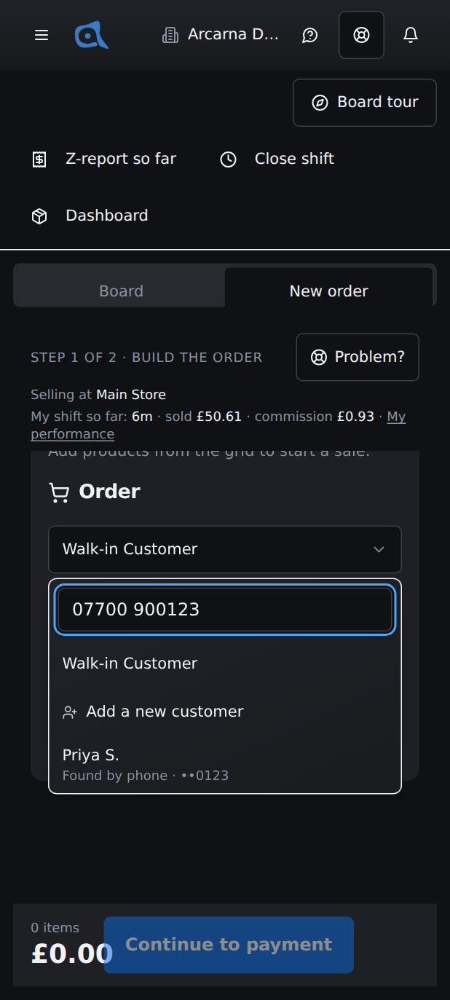
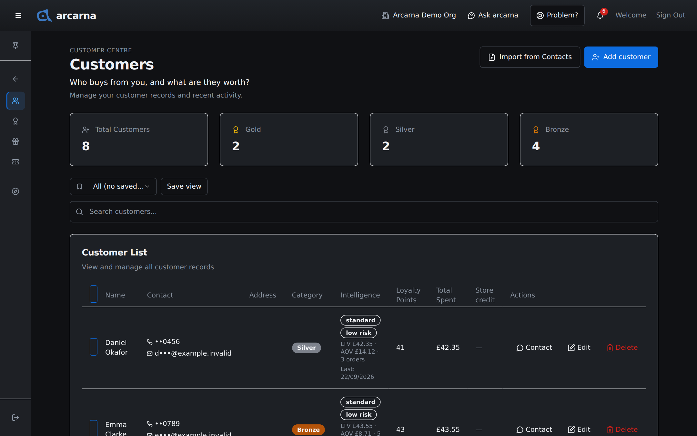
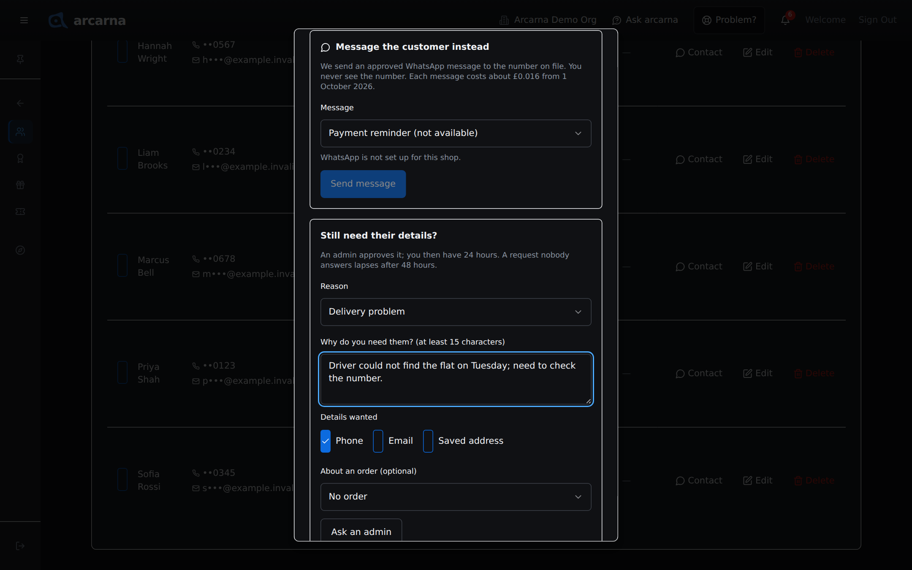
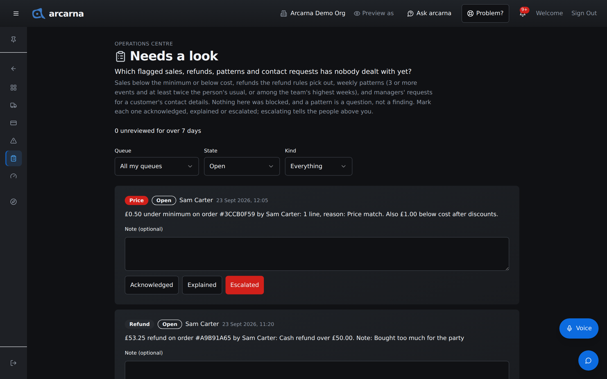
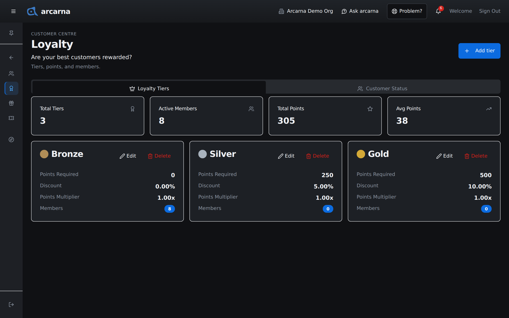

Staff training manual
Staff training manual
How arcarna keeps customers' details private, what each role can see, how loyalty points are earned and spent, and how managers look after customer records, promotions and gift cards.
Privacy · who sees what
Customer details are private by default
A customer trusts the shop with their phone number and email. arcarna protects them by showing each role only what it needs. Everyone can find and serve a customer, but only admins can read a phone number or an email in full. Everyone else sees them masked: enough to tell two customers with the same name apart, not enough to contact them. CASHIER MANAGER
| Role | What they see of a customer |
|---|---|
| CASHIER | Name, loyalty tier and points. The phone and email are masked, for example ••4821 and p•••@example.invalid. A cashier can type in a new customer's details at the till but cannot read them back. |
| MANAGER | Everything a cashier sees, plus what the customer has spent and their order history, in the Customer Centre. The phone and email are still masked. A manager who genuinely needs a customer's details asks for them, and an admin decides. |
| ADMIN | Everything, including the full phone, email and saved address, and each customer's Access history. |
| OWNER | As an admin, plus Customer data access: the whole shop's record of who looked at customers' contact details. |
At the till · finding a customer
Finding and adding customers at the till CASHIER
You find and attach customers from the order on the Operations board. Section 3 walks through it step by step. The points that matter for privacy are these:
| You want to… | What to do |
|---|---|
| Find someone by name | Type part of their name into Search customers.... Each match shows their name, category, points and masked phone, such as Gold • 240 pts • ••0123. |
| Find someone by phone | Type their whole number. arcarna checks it and lists the match as Found by phone · ••0123. Part of a number finds nobody; that is deliberate, so nobody can work through the list guessing digits. If no one has the number, you see Nobody on the system has that number. |
| Add someone new | Choose Add a new customer. Only the name is needed. Type the phone and email carefully while the customer is in front of you: once saved, you will only see them masked. |
| Avoid a duplicate | If the number or email is already on the system, arcarna offers the existing customer, for example Priya S. (••4821). Use them, or choose No, add new if it really is someone else, such as two people sharing a family phone. |

Loyalty · points and tiers
How loyalty points work
A named customer earns loyalty points on every sale and can spend them as money off a later one. Points only ever come from sales and redemptions. Nobody types them in, so a customer's balance is always the true one.
| Part | What it means |
|---|---|
| Earning | One point for every £1 the customer actually pays, after every discount and after any points they spent. The order summary shows Earn … loyalty points before you take payment. |
| Spending | Redeem points on the customer's card at the till. Points are money off what the customer pays, after VAT: £5 of points is £5 off. Unless the shop has changed it, 100 points are worth £1, so 500 points take £5 off. |
| Minimum | A customer needs the shop's minimum number of points (100 unless changed) before they can redeem. Until then the button is greyed out and says how many are needed. |
| Tiers | Customers move up tiers, such as Bronze, Silver and Gold, as their points grow. The till shows the tier (for example Gold Member), its discount, and how many points to the next tier. The tier discount applies by itself. The word in the customer picker, such as Gold, is something else: the customer's category, which a manager sets by hand. |
Customer Centre · Customers
The Customers page MANAGER
The Customer Centre is for managers and above. Its first page, Customers, answers Who buys from you, and what are they worth? It lists every customer record, with their tier, points, what they have spent and any store credit.
- Open the menu, choose Customer Centre, then Customers.
- The cards at the top count Total Customers and how many are Gold, Silver and Bronze.
- Type a name into Search customers... to narrow the list. A whole phone number also works: arcarna looks it up and shows the match, as at the till.
- Save a search you use often with the saved views control above the search box, and set one as your default if you like.

| Column | What it tells you |
|---|---|
| Contact | The masked phone and email. Admins see them in full. |
| Address | The customer's saved address. Shown to admins only; blank for managers. |
| Category | A label you set by hand: Bronze, Silver, Gold or Platinum. It is not the same as their loyalty tier, which follows their points (see Loyalty tiers below). The count cards at the top count categories. |
| Intelligence | A short read of the customer: their segment, how likely they are to stop coming (low, medium or high risk), lifetime value (LTV), average order value (AOV), number of orders and their last order date. |
| Loyalty Points and Total Spent | Their points balance, and what they have spent with the shop. |
| Store credit | The balance left on gift cards linked to them, and how many active cards they hold. |
Adding a customer
- Select Add customer. The Add new customer window opens.
- Enter the Name (required), and if you have them the Phone, Email and Billing Address. Choose a Category; new customers start as Bronze.
- On a phone that supports it, Pick from device fills the form from the phone's contacts.
- Select Create Customer. If the phone or email is already on file, arcarna offers the existing record (Open Priya S. (••4821)) or No, add new.
To bring in many customers at once, select Import from Contacts and upload a .vcf file exported from a phone's contacts, or a CSV. You see a preview before anything is saved.
Editing a customer without reading their details
Select Edit on a customer. You can change their name, email, address and category. The phone box is labelled Replace number and shows only the masked number:
- Leave it empty to keep the number on file.
- Type a whole new number to replace it. The change is logged.
- The email and address boxes start empty for the same reason. Leaving them empty keeps what is on file; typing a new one replaces it.
Select Update Customer to save. Points and total spent cannot be edited by anyone.
Deleting customers
Delete on a row removes that customer after you confirm. Their contact details, order history link and loyalty balance go; past orders stay, but no longer show a customer. It cannot be undone.
On a computer, tick several customers to act on them together: Set category or Delete. Admins also get Export CSV. Every export is logged.
Customer Centre · contacting a customer
Contacting a customer MANAGER
Sometimes you need to reach a customer: their order is ready, a delivery went wrong, or they owe money. Select Contact on their row. The window offers two ways, in this order, and the first is nearly always the right one.
1. Message the customer instead
arcarna sends an approved WhatsApp message to the number on file. You never see the number.
- Under Message, pick one: Order ready, Delivery update, Payment reminder or Please call us on the shop number.
- Order ready and Delivery update are about one order: choose it under Order.
- Select Send message. You see Message sent.
A message marked (not available) says why underneath, for example when WhatsApp is not set up yet or the customer has no number. Each message costs the shop about £0.016 from 1 October 2026.
2. Still need their details? Ask an admin
If a message will not do, for example a complaint that needs a phone call, ask for the details themselves. An admin or the owner approves or declines. There is no way to approve your own request.
- Under Still need their details?, choose a Reason: Complaint, Refund or return, Delivery problem, Lost property, Debt chase or Other.
- Under Why do you need them?, write at least 15 characters, such as "Customer rang about a damaged delivery, needs a call back".
- Under Details wanted, tick only what you need: Phone, Email or Saved address.
- If it is about one order, choose it under About an order (optional).
- Select Ask an admin. You see Request sent, and the window shows when you asked and when it lapses.

When it is approved: 24 hours, one tap at a time
You get a Signal, Contact details approved or Contact details declined. A request nobody answers lapses after 48 hours.
- Open Contact on the same customer. It reads Approved until with the date and time.
- Select Show phone (or Show email, Show saved address). The detail appears. Every tap is logged before the detail is shown.
- When you have finished, select End access now.
Access lasts 24 hours from approval, for that one customer and only the details you asked for. What you revealed disappears when you close the window, when access ends, or if an admin revokes it. It is never stored on the device.
Admin · contact requests and the access record
Approving requests and checking who looked
When a manager asks for a customer's details, admins and the owner get a Signal headed Contact details requested, and the request appears at the top of Needs a look (Operations Centre) under Contact details requests.
- Read the card: who asked, for which customer, which details, the reason, any order, and their note in quotes.
- If you like, add a Note to the manager (optional). It goes with a decline in their Signal.
- Select Approve for 24 hours or Decline. Nobody can approve their own request.
- An approved request stays on the list as Access granted, with when it ends. Select Revoke access to end it early; the manager is told.

Access history, one customer at a time
As an admin, Contact on a customer has a second tab, Access history. It lists everyone who has looked at or changed that customer's contact details, newest first: Revealed, Driver's call, Used saved address, Replaced number, Exported, requests and decisions, Messaged (number not shown), Emailed an invoice and API read contact details. The Contact tab itself notes that you already see their details on the customer.
Customer data access (owner only)
The owner has the whole shop's record in Settings Centre › Customer data access. It answers Who has looked at customers' contact details? Filter by What (for example only Revealed) and by Period, from the last 7 days to the last year. Each row shows when, who and their role, what they did, and which customer. The owner also receives a weekly Signal summing up the week.
Customer Centre · Loyalty
Loyalty tiers MANAGER
The Loyalty page answers Are your best customers rewarded? It has two tabs.
| Tab | What it shows |
|---|---|
| Loyalty Tiers | Counts of Total Tiers, Active Members (customers with any points), Total Points and Avg Points, then one card per tier with the points required, its discount and how many members it has. |
| Customer Status | Each customer with their tier, points, total spent and how far they are from the next tier. |
- Select Add tier, or the edit button on a tier's card.
- Fill in Tier Name, Points Required (the balance that reaches it) and Discount % (taken off the subtotal at the till, automatically). Color and Benefits (Optional) are for display.
- Save. The till uses the new tier on the next sale.
What a point is worth
The value of a point and the minimum a customer can redeem are set in Settings › Payment, on the Loyalty redemption card: select Open loyalty redemption settings.
| Setting | What it means |
|---|---|
| Redemption rate (£ per point) | 0.01 means 100 points take £1.00 off. This is the shop's starting value. |
| Minimum points to redeem | The smallest balance a customer can spend. 100 to start. |
Select Save settings. Changing the rate changes what every customer's existing points are worth, so agree it with the owner first.

Customer Centre · Promotions
Promotions MANAGER
The Promotions page answers What's on offer, and is it working? A promotion is a code a cashier types at the till for money off a named customer's order.
- Select New campaign.
- Enter a Campaign Name and the Promo Code customers will quote.
- Choose the Discount Type and its Value: Percentage Off (for example 10) or Fixed Amount Off (for example £5).
- Set the Start Date and End Date. If you like, add a Minimum Purchase, a Max Discount and a Usage Limit.
- Leave Active on, and save.
Each campaign card shows its status: Active, Scheduled (not started), Expired, Exhausted (usage limit reached) or Inactive (switched off). The filters show All, Active or Expired. Select Lift on a campaign to see whether it paid: sales during the promotion compared with the period before it. Edit and Delete sit beside it.
At the till, a code only applies when its conditions are met. If not, the cashier sees why, for example that the minimum spend has not been reached or the promotion has expired.
Customer Centre · Gift Cards
Gift cards MANAGER
A gift card is money the shop owes a customer, so issuing one is for managers and above, and always needs a reason. The Gift Cards page answers What stored value is outstanding?
Issuing a gift card
- Select Issue gift card.
- Enter the Amount.
- Under Customer (optional), link it to a customer, or leave it as Walk-in. A linked card shows in that customer's Store credit.
- Under Reason, say why, for example "bought as a present, paid £25 cash" or "goodwill after a late order". It is kept on the audit log beside your name.
- Select Issue. The 16-character code appears once. Give it to the customer, then select Done.
Finding and voiding a card
The Gift cards list shows each card's masked code, Balance, Original amount and status. Type the last four characters into the search box to narrow it. To see a card's history, type its full 16-character code and select Details: you see its balance and every movement. Void cancels an active card, for example one reported lost.